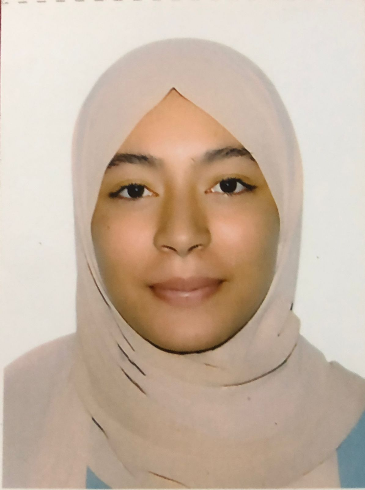
Je suis Siham Hamzaoui, 19 ans, originaire de Salé. J'étudie le développement digital en 1ère année à la Cité des Métiers et des Compétences (CMC) de Rabat.
En deux semestres, j'ai appris le développement front-end, la programmation orientée objet, les bases de données, et j'ai réalisé plusieurs projets concrets.
Je suis également passionnée par le dessin et l'entrepreneuriat. En août 2026, j'ai effectué un stage d'un mois au sein de l'ONCF, une expérience qui m'a permis de découvrir le monde professionnel et d'appliquer mes compétences dans un environnement réel.
Accueil et orientation des spectateurs lors de grands événements accueillis au Stade Moulay Abdellah, dont les 3 jours du festival Mawazine 2026 et le match Maroc – France. Vérification des tickets et accompagnement des spectateurs jusqu'à leur place, gestion de la relation client au sein de l'espace VIP, avec le sens du contact et une présentation professionnelle en toute circonstance.
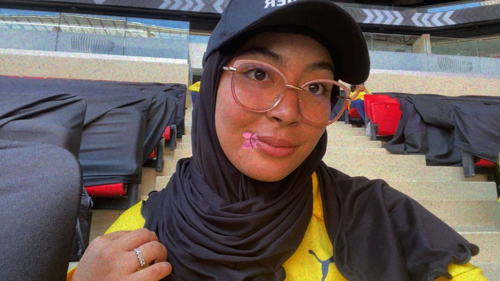
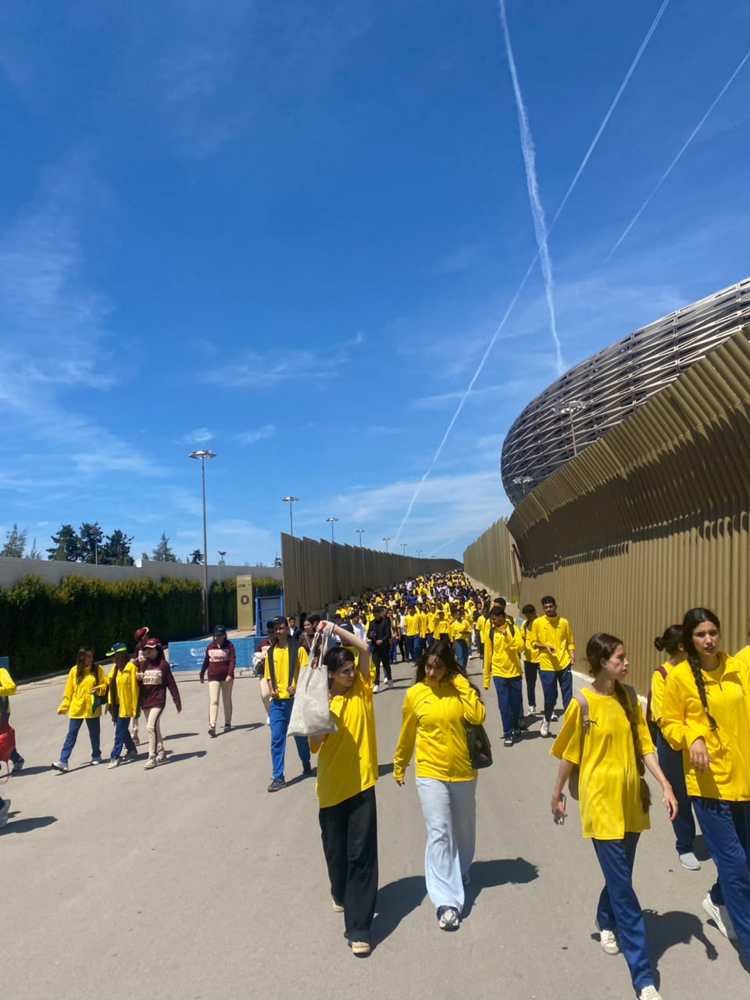
Stage d'initiation au sein du Pôle Infrastructure et Circulation de l'ONCF, axé sur le développement d'applications Python pour le suivi et l'analyse de données de maintenance ferroviaire. Après une phase de découverte de l'environnement professionnel et du schéma de circulation, j'ai développé deux applications complètes permettant d'exploiter des fichiers Excel réels : nettoyage et traitement des données avec Pandas et OpenPyXL, interfaces graphiques avec Tkinter, visualisations avec Matplotlib et génération de rapports avec FPDF2.
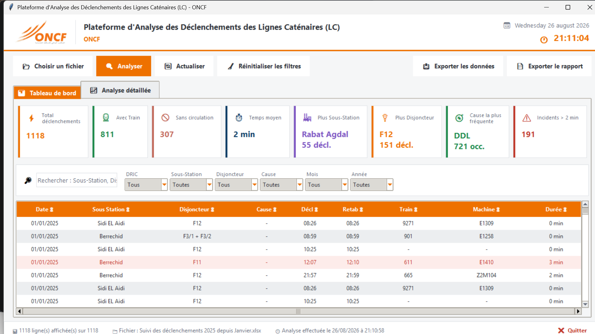
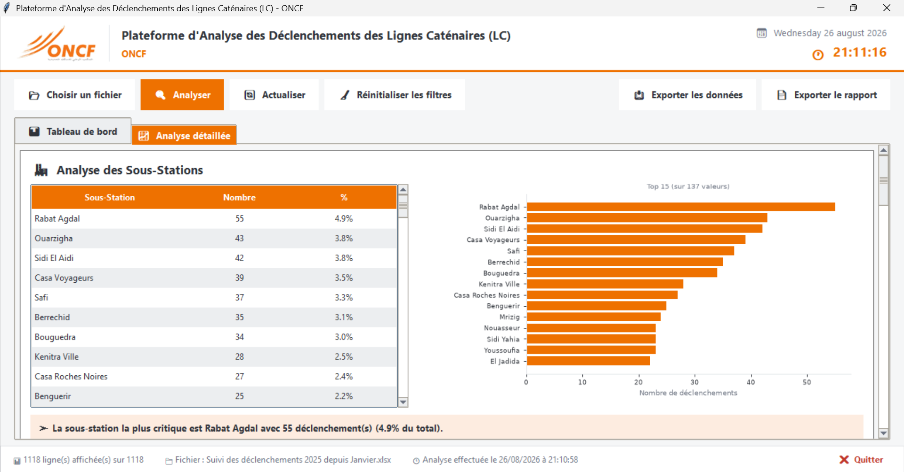
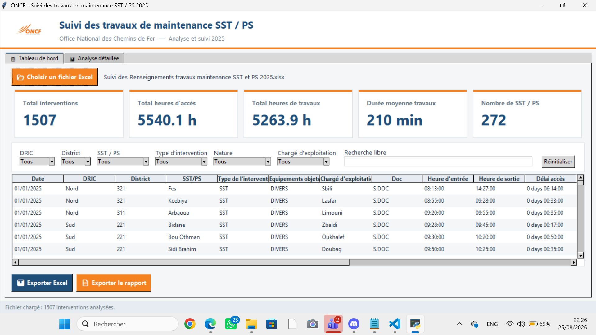
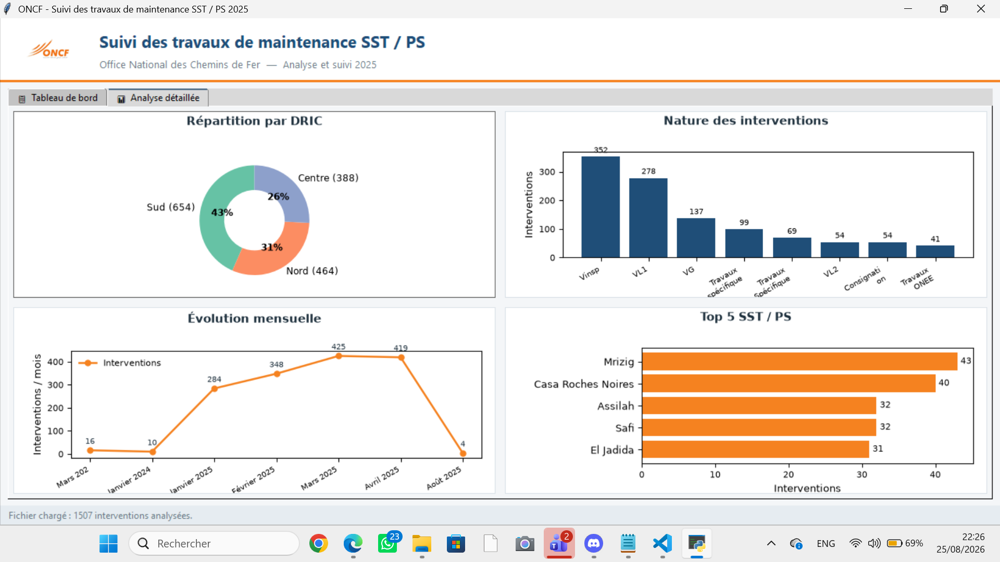
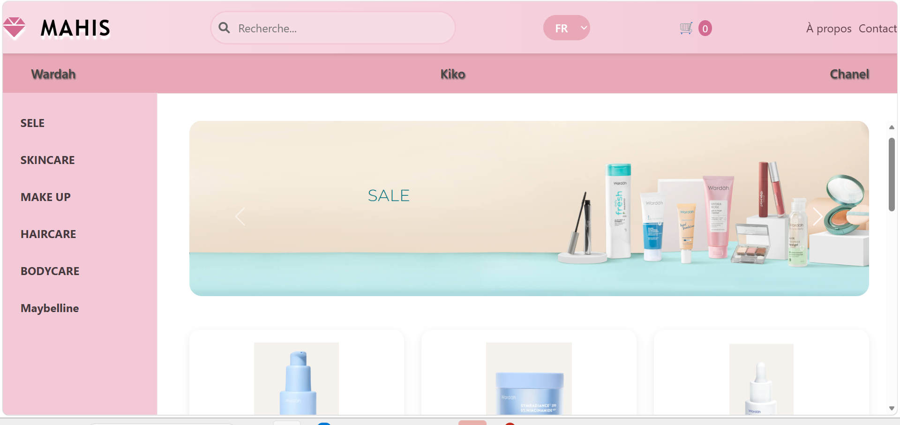
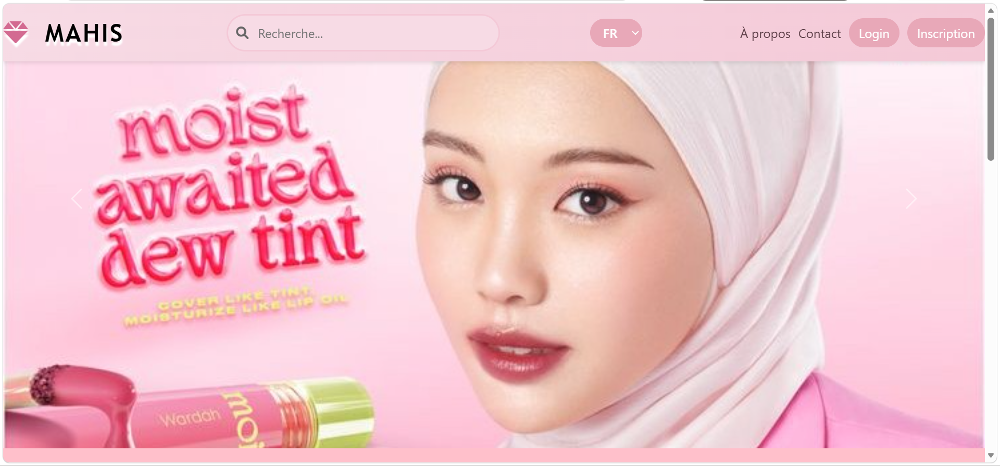
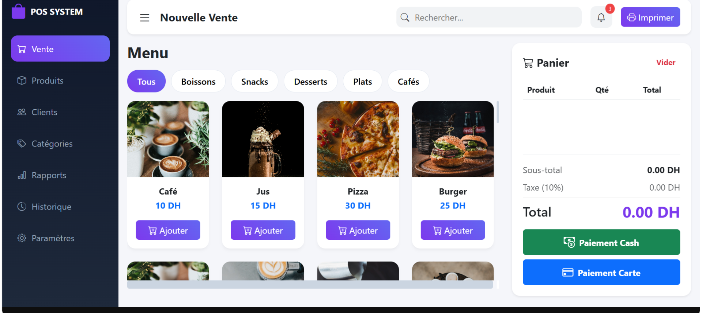
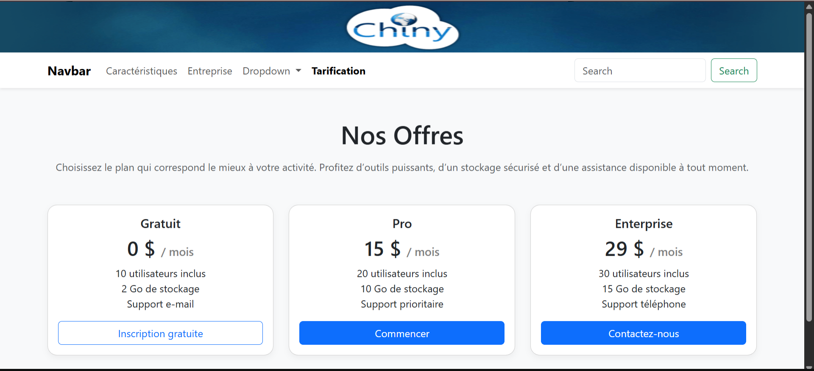
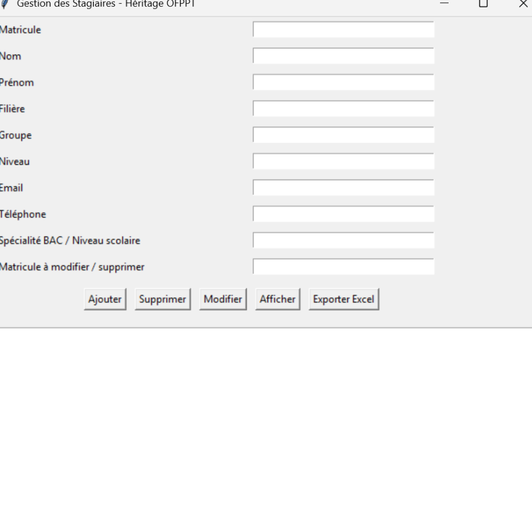